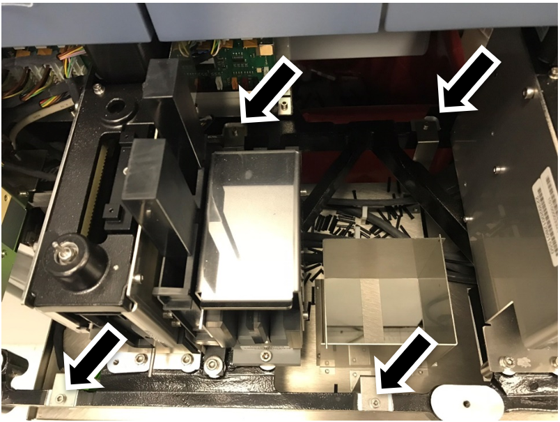
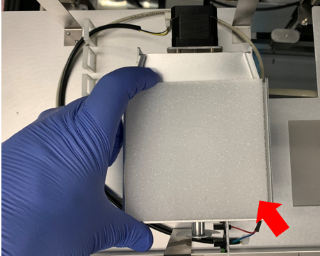
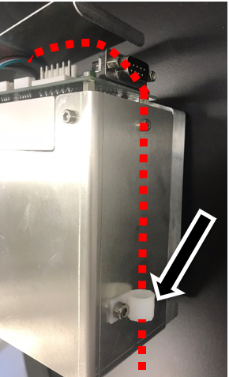
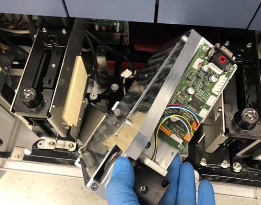
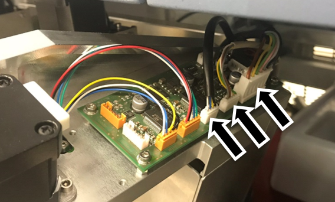
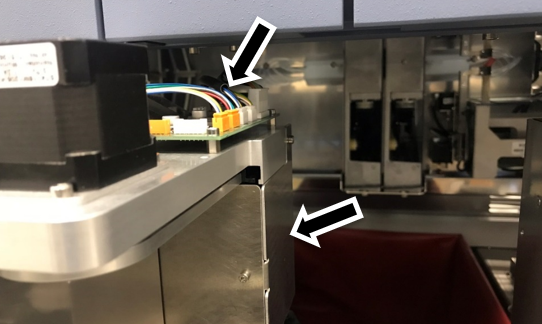
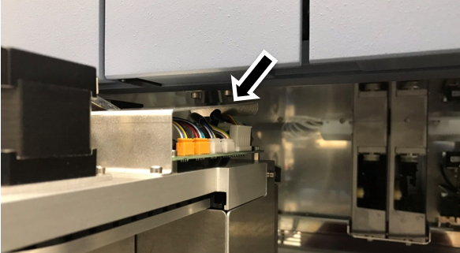
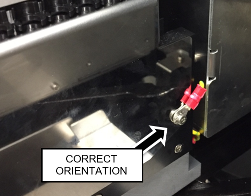

Solid Waste on the Fly Installation
This procedure will install the following hardware:


Parts and Materials Required
- Panther Tool Kit
- Continuous Access Parts Kit
- High Vacuum Grease
Procedure
- Power down the Panther System.
- Power down the PC.
 Remove the Waste Drawer Cover
Remove the Waste Drawer Cover
- Replace Waste Drawer Front Cover Panel Screws (from SHCS to Button Head)
- Remove the Marketing Panel
- Remove the Linear Distributor.
- Remove the Magnetic Parking Station.
- Remove the Reagent Tip Chute.

Note— After removing the Reagent Tip Chute, save the 2 mounting screws for reassembly. Dispose of the 2 large OD washers. - Remove the Sample Dispense Slot.
- Unclip the cable harness clamps on the Splash Shield.
Note—Review the routing of the cables. Take a picture if this is helpful. Similar routing will be required with new Tiplet Catcher module. - Remove the four Splash Shield mounting screws. Save the screws for reassembly.

- Remove the existing Splash Shield.
- Install the Y-Splitter CAN cable.
- Re-install the Sample Dispense Slot.
- Remove all packing foam from the Tiplet Catcher.

- Install the Tiplet Catcher.
- Prepare the Tip Carousel for installation.
- Secure the Tiplet Catcher motor and sensor cables through the cable clamp on the tip carousel.

- Insert the Tip Carousel into the location previously occupied by the Reagent Tip Chute at the angle shown below.
The Reagent Tip Chute will be secured in a later step.
Note—Do NOT screw down the Tip Carousel yet. 
- Connect the CAN cable, motor cable, and sensor cable to the Tip Carousel PCB.
The shorter end of the Y-Splitter CAN Cable connects to the Tip Carousel
Note— Ensure that the Tiplet catcher motor and sensor cables are to the left of the CAN cable. 
- Secure the Tip Carousel to the drawer frame using the screws from the Tip Chute.
DO NOT use the washers. A long handle ball-end 4mm hex driver is required to tighten the rear screw. - Ensure the cables do not protrude too high above the PCBA (arrow in figure below).
Ensure the cables do not protrude too far outside the rear right side (arrow in figure below).
Note—Improper routing may result in damage to the cables when closing the service drawers. 
- Re-install the Tip Carousel PCBA cover. Make sure the cover maintains clearance from the PEM nuts on the frame above.

- Move the grounding wire of the Magnetic Parking Station from the right side of the module (when viewed from the rear) to the left side of the module using the existing screws. The lug barrel must be oriented as shown below to maintain clearance with the Mag Wash when the service drawer is closed.
- Re-install the Magnetic Parking Station.

- Re-install the Panther Linear Distributor.
- Continue to install either:


 button at the top of the page to send feedback, comments, or change requests.
button at the top of the page to send feedback, comments, or change requests.